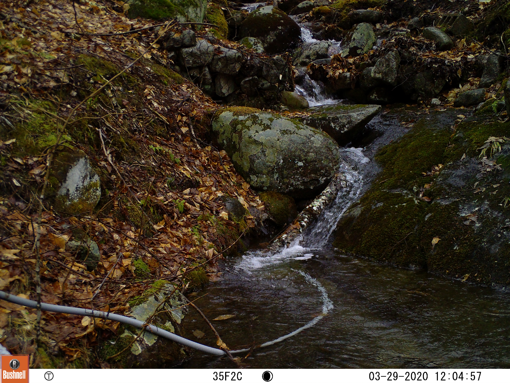

A Guide to an Image Processing Pipeline for Classification with Machine Learning
2022-07-15
Chapter 1 Introduction
1.1 About This Book
This book was authored to serve as a basic guide for using our data pipeline to process raw images using ROI software, VIA image annotation, and a random forest machine learning model.
Special thanks goes to Audrey Thellman and Weston Slaughter for their guidance and mentorship.
1.2 Introduction
The primary target users of this software are river ecologists looking to extract data from camera traps. Freshwater systems are losing ice rapidly due to rising global temperatures. Currently, studies on river ice ecology are patchy, and more so regarding small-scale rivers.
Our team’s images are from the Hubbard Brook Experimental Forest in New Hampshire. Nine camera traps in as many watersheds have taken images daily for three years (see below for an example image) from which the Hubbard Brook Ecosystem Study and the U.S. Geological Survey can extract data using our product.

1.3 How to Use This Book
The data pipeline referenced in this book was originally designed for use by scientists studying field camera images at Hubbard Brook Experimental Forest. However, our software can be viably used for classification with other types of field images.
Each chapter will provide a broad overview with instructions on applying our data pipeline for generalized applications. Instructions for Hubbard Brook users (with images stored) in Google Drive will be kept separate from instructions for users with other types of images, as modifications to the scripts will likely be required when processing different images.
More information about our pipeline and its functionality can be found in the documentation for each script, or on our GitHub repo here.
1.4 Data Pipeline Overview
The data pipeline starts with raw images and finishes with a trained machine learning model which can classify pixels into groups of attributes. Each chapter of this book will cover one step in this pipeline.
- Renaming image files
- In this step, raw images have their file names converted to contain useful information including time-series data
- Region of interest
- To avoid interference from land/soil, select a polygonal region of interest containing the desired region
- VIA image annotation
- Using VGG image annotation software, classify pixels in masked images to serve as training data for the machine learning model
- Machine learning model
- Run the images through a trained model which will predict ice and snow cover